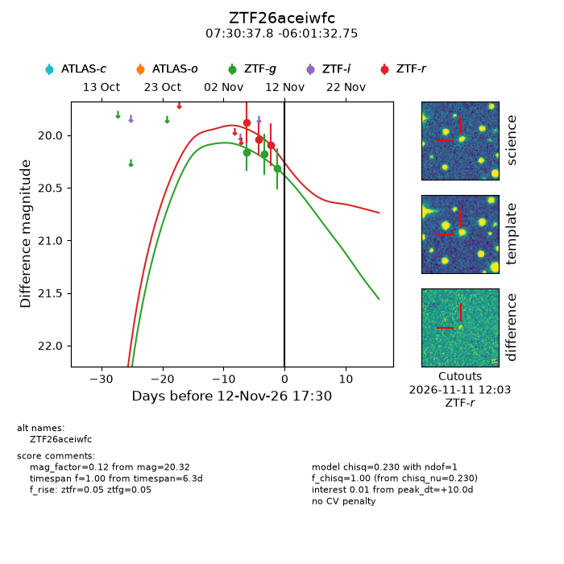
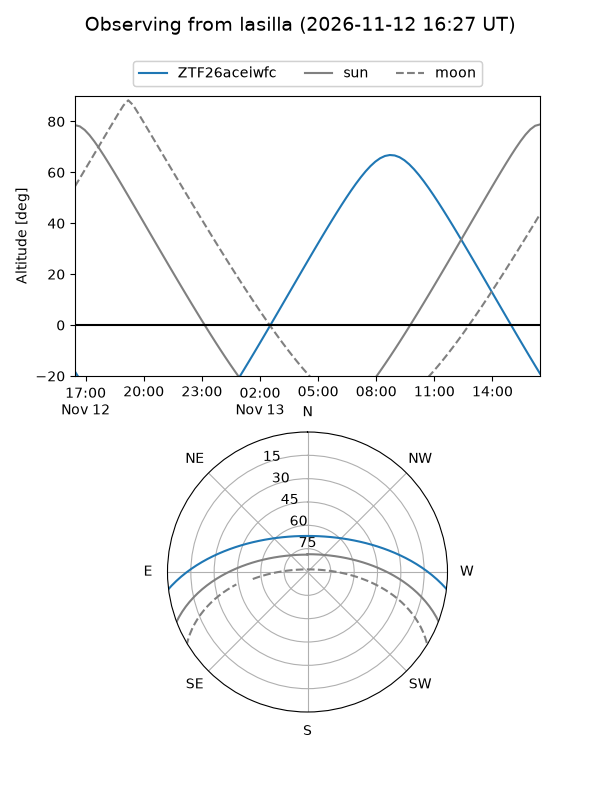
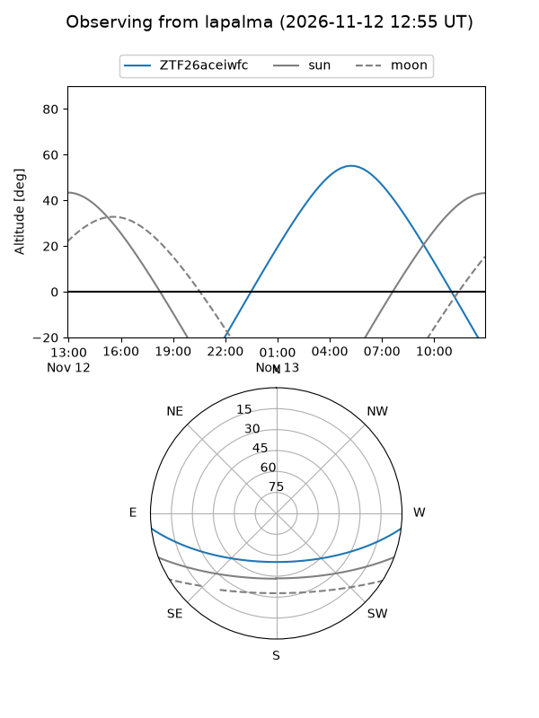
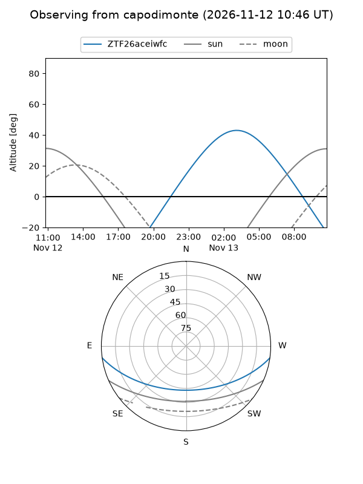
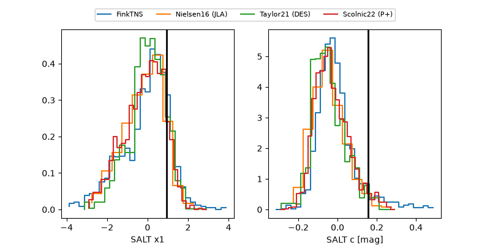

ZTF26aceiwfc
Target ZTF26aceiwfc at 2026-11-12 17:35
Aliases and brokers:
FINK-ZTF: ztf.fink-portal.org/ZTF26aceiwfc
Lasair-ZTF: lasair-ztf.lsst.ac.uk/objects/ZTF26aceiwfc
ALeRCE-ZTF: alerce.online/object/ZTF26aceiwfc
Direct TNS query: direct search
alt names
ZTF26aceiwfc (ztf,fink_ztf)
Coordinates:
equatorial (ra, dec) = 112.6577,-6.02576
equatorial (HMS+DMS) = 07:30:37.84,-06:01:32.75
galactic (l, b) = (222.8072,+5.89771)
Flags:
peak dt: +10.0
Photometry:
last ztfg=20.32, ztfr=20.09
3 ztfg, 3 ztfr detections
Lightcurve

Visibility



Additional plots
